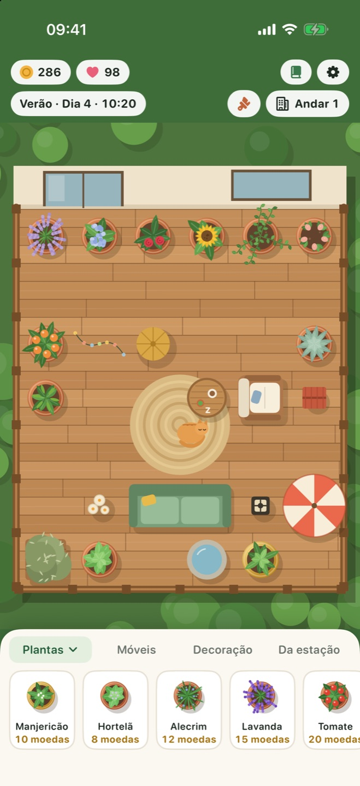
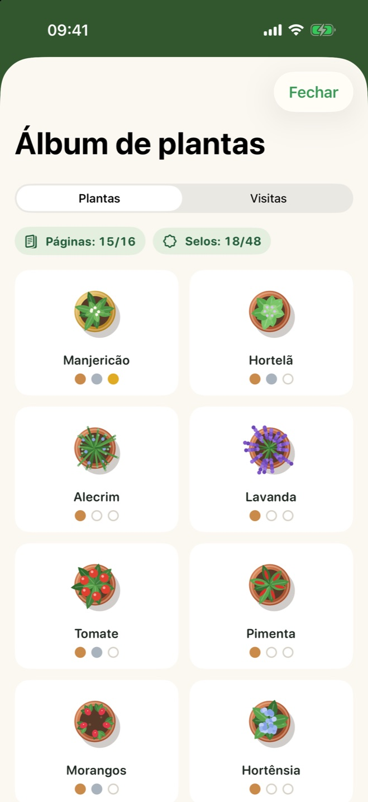
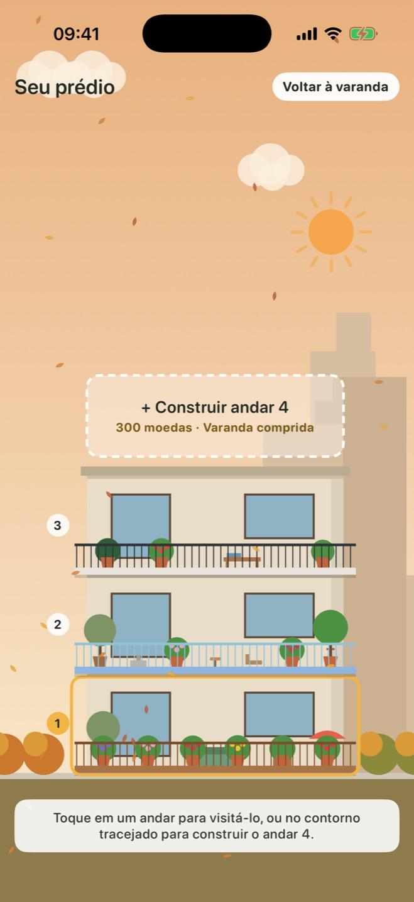

Cresce em tempo real
Um dia no jogo dura uma hora real. Visitas curtas e tranquilas que cabem no seu dia, e sempre há algo pronto quando você volta.
Para iPhone e iPad
Plante ervas, flores e frutas, decore sua varanda, acompanhe as estações e receba visitas de penas e de pelos. Um pouco de calma para todo dia.
Arraste uma planta para a varanda, regue quando estiver com sede e colha quando estiver madura.
Adicione sofás, lanternas, fontes e pisos novos. Uma varanda aconchegante rende mais e atrai mais visitas.
Seu jardim continua crescendo com o app fechado. Uma planta esquecida nunca morre; ela só espera um pouco de água.
Tudo para um ritual diário tranquilo, e nada que te apresse.
Um dia no jogo dura uma hora real. Visitas curtas e tranquilas que cabem no seu dia, e sempre há algo pronto quando você volta.
A chuva da primavera rega suas plantas, o sol do verão amadurece os tomates, as folhas do outono voam e a neve do inverno cobre o parapeito.
Coloque móveis e decoração numa grade e troque para deque de madeira, mármore ou mosaico e um parapeito novo.
Borboletas, abelhas, uma coruja, um esquilo e os gatos do vizinho aparecem. Descubra do que cada um gosta; talvez um gato se mude para cá.
Complete seu álbum de plantas com estágios de crescimento e selos de colheita, e desbloqueie um limoeiro especial.
Junte moedas para adicionar andares, cada um com seu formato de varanda, e veja seu prédio mudar com as estações.
Contrate um jardineiro para regar as plantas com sede e colher as maduras em todos os andares, por uma pequena taxa. Disponível a cada quatro horas.
Salve seu jardim com um nome e volte a ele quando quiser. Até dez jogos salvos.
Ative a sincronização com o iCloud e seu jardim acompanha você entre o iPhone e o iPad. É opcional e fica na sua própria conta Apple.



Um único download grátis para os dois. No iPad, a varanda ganha mais espaço e mostra mais da vizinhança.
A varanda fica centralizada em qualquer tela, e o jardim vai até a borda, ao redor da barra de status.
| iPhone | iOS 17 ou posterior |
|---|---|
| iPad | iPadOS 17 ou posterior |
| iPhone Duo | Compatível |
| Preço | Grátis. Sem anúncios e sem compras no app. |
|---|---|
| Conta | Não é necessária. Funciona offline. |
| Progresso | Salvo no seu dispositivo e, se você ativar a sincronização, também no seu próprio iCloud. |
O Balcony Bloom não tem servidores, análises nem anúncios. Nada do que você faz no jogo chega ao desenvolvedor. Ler a política de privacidade
Leia as perguntas frequentes ou abra uma issue para relatar um bug ou sugerir uma ideia.